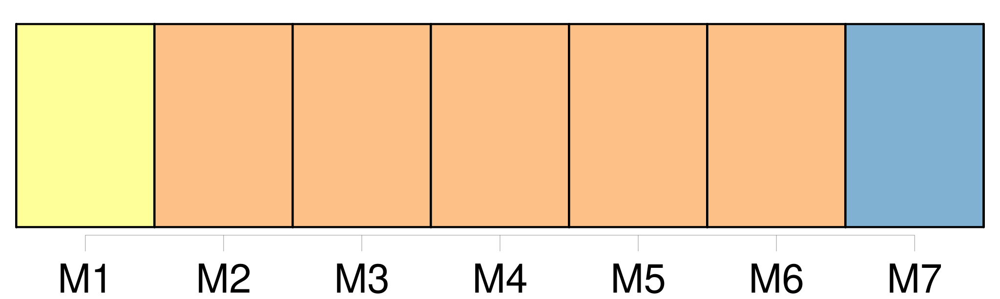
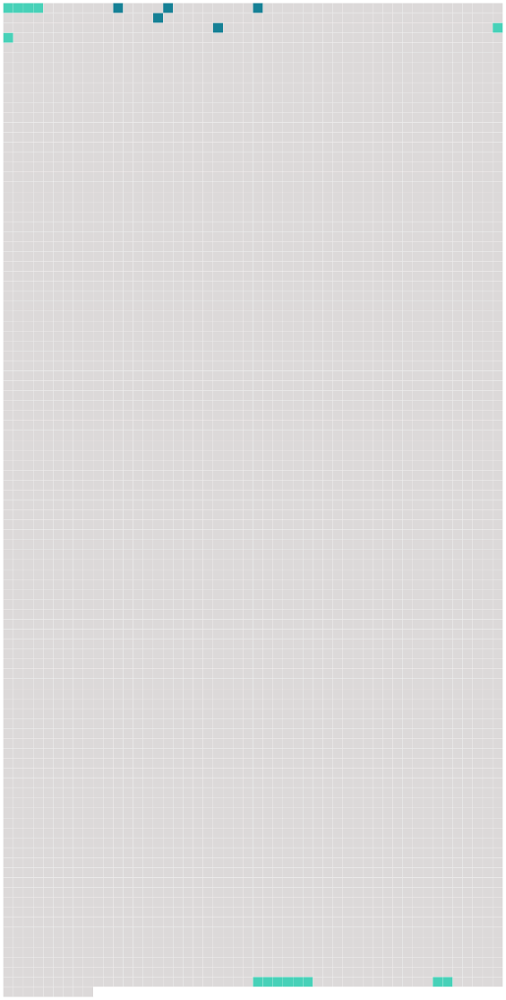

Longueur nb maillons : 9 mentions |
 |
[La maison de Pauline] n'avait rien de pittoresque, quoiqu' [elle] fût fort ancienne. [Elle] n'avait conservé, de l'époque où [elle] fut bâtie, que le froid et l'incommodité de la distribution ; du reste, pas une tradition romanesque, pas un ornement de sculpture élégante ou bizarre, pas le moindre aspect de féodalité romantique.
Tout [y] avait l'air sombre et chagrin, depuis la figure de cuivre ciselée sur le marteau de la porte, jusqu'à celle de la vieille servante non moins laide et rechignée qui vint ouvrir, toisa l'étrangère avec dédain, et lui tourna le dos après lui avoir répondu sèchement : [1 phrases]
[Cette maison] lui rappelait les plus fraîches années de sa vie, les pures scènes de sa jeunesse ; mais, en comparant ces témoins de son passé au luxe de son existence présente, elle ne pouvait s'empêcher de plaindre Pauline, condamnée à végéter là comme la mousse verdâtre qui se traînait sur les murs humides. [204 phrases] Le secrétaire de la mairie, qui faisait sa partie de billard au café situé justement en face de [la maison des dames D …] … , vit ou crut voir passer et repasser derrière les vitres de [cette maison] la dame étrangère, vêtue singulièrement, disait -il, et même magnifiquement. |
 |
Il est possible de télécharger la ressource sur la page Ortolang |
Si vous avez des questions ou vous voyez des erreurs, merci d'envoyer un mail à silvia.federzoni89@gmail.com |